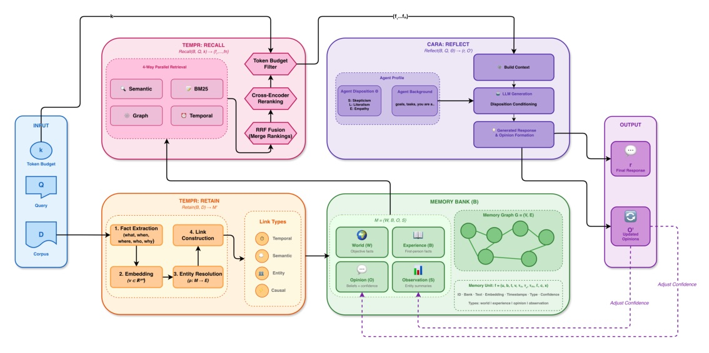
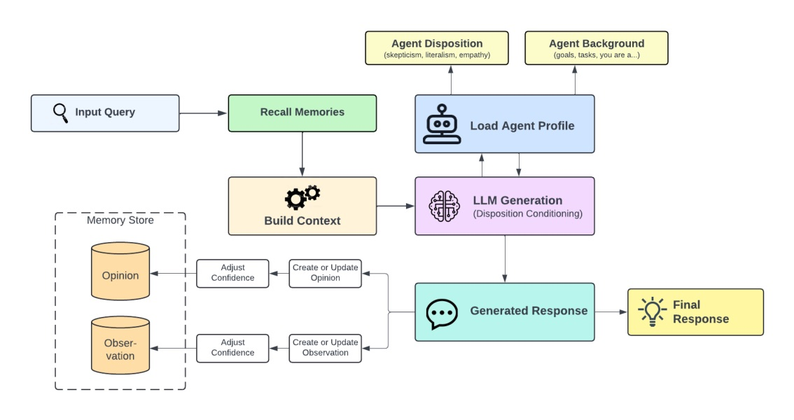

A structured memory substrate for long-lived agents — not another top-k retrieval wrapper.
Memory becomes four kinds of state plus three explicit operations: retain · recall · reflect.

Do not choose between lexical, semantic, graph, and time retrieval.
Run all four, then let them vote.

| Dataset | Questions | Context / sessions | What it probes |
|---|---|---|---|
| LongMemEval S | 500 | 115k tokens / ~50 sessions | IE, multi-session, temporal, update, abstention |
| LongMemEval M | 500 | 1.5M tokens / ~500 sessions | same abilities at larger scale |
| LoCoMo | varies | 304.9 turns / 19.3 sessions avg. | personal details, preferences, events; multimodal |
| Method | Overall | Temporal | Multi-session |
|---|---|---|---|
| Full-context OSS-20B | 39.0 | 31.6 | 21.1 |
| Hindsight OSS-20B | 83.6 | 79.7 | 79.7 |
| Hindsight OSS-120B | 89.0 | 85.7 | 81.2 |
| Hindsight Gemini-3 | 91.4 | 91.0 | 87.2 |
The strongest evidence is not “a larger model won.”
It is 39.0% -> 83.6% with the same GPT-OSS-20B backbone.
| Method | Single-hop | Multi-hop | Open domain | Overall |
|---|---|---|---|---|
| Memobase | 70.92 | 46.88 | 77.17 | 75.78 |
| Zep | 74.11 | 66.04 | 67.71 | 75.14 |
| Hindsight OSS-20B | 74.11 | 64.58 | 90.96 | 83.18 |
| Hindsight OSS-120B | 76.79 | 62.50 | 93.68 | 85.67 |
| Hindsight Gemini-3 | 86.17 | 70.83 | 95.12 | 89.61 |
“Running these four channels in parallel yields a diverse set of candidates.”
四個通道的目的不是重複搜尋，而是從語意、字面、圖結構與時間四種相關性產生候選。§4.2.2 p.10
“the memory architecture, rather than sheer model size, is carrying much of the performance.”
作者以相同 OSS-20B backbone 的 full-context 對照與 Hindsight 對照，主張增益主要來自記憶架構。§7.4 p.19
HINDSIGHT’s useful provocation is to make evidence, summaries, beliefs, retrieval budgets, and updates separate objects in the agent system.